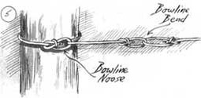

The Bowline
Three ways to tie the King of Knots, including the classic, the hitch, diagrams and instructions.
by Jim Sullivan
October/November 1994
The bowline (pronounced bo-lin) is the single most important knot for all outdoors people, on land or ashore. Its job is to make a loop in the end of a rope. This allows you to put your rope to use by attaching it to an object such as a hook, a post, or even another rope. The bowline is traditionally preferred to the many other possible loop knots because it is secure, it won't come untied, it is easy to tie under difficult conditions, and it is easy to untie - a requirement of good knots.
The bowline is always one of the first knots taught. Once learned, it serves as a basis for understanding many other important knots. But surprisingly few people know how to tie it - and even fewer can make reliable use of it in the field. This is often because your physical orientation to a rope can be different in the field than it was when you learned the knot while sitting in a comfortable chair with a knot book open in your lap and a clean, supple length of practice cord in your hand. In the field, you may suddenly find yourself having to tie it in stiff material, upside down, with freezing fingers, in the dark, or around the object rather than "in hand."
Think of the bowline simply as an interlocking hitch and loop (see Figure 1d). Perhaps a dozen different methods have evolved to tie it under all conditions, but you need only three of them to tie your way out of most situations. Once you learn to visualize the knot, you won't need to follow the precise directions given here or anywhere else. Half the fun of tying knots is developing your own style.
Instructional Bowline
Although a somewhat pedestrian version, this is often the first method taught because it so clearly illustrates the structure. In this method you form the hitch first, the loop second.
Stretch the rope out on a table with the working end on the right and place your hands on it, palms down. As you pick it up, rotate your wrists out as in Figure 1a, allowing a few inches of the short (working) end of the rope to extend on the right.
Immediately bring your hands together with your right above the left, rotating your right wrist so that your right palm faces down again - the hitch will form itself (Figure 1b). You can gain additional control by twisting the rope between your forefinger and thumb, then pinching it with your left hand. That's the end of step one; it takes about two seconds. Getting this correct is probably the most important step. The hitch should be pointing away from you, the right side should be over the left, and the working end should be leading off to the right. Practice these few steps until you can do them without thinking about it. Step two involves interlocking the loop into the hitch. You can do this in two stages. First, with your right hand, thread the working end (on the right) up through the hitch. The big loop you are making now will be the functional loop of the knot, so adjust it to the size required at this point.
Second, trap the standing part of the rope (the long end on your left) by passing the working end behind the standing part, then back down through the hitch.
That's it. You will notice the short working end lies inside the working loop (Figure 1d). If the working end lies outside the loop, you've tied a less secure knot called the left-handed bowline. You still have an interlocking loop and hitch, but in trapping the standing part of the rope, you crossed over in front of it before passing behind it and down through the hitch. Just pull it out, pass it correctly behind the standing part, and reinsert it through the hitch.
The bowline must be "worked up" carefully: Pinch the working end against the parallel edge of the working loop, then pull on the standing part, making adjustments as necessary. You'll see the hitch tighten around the loop.
The instructional bowline is a perfectly serviceable method used in the field by many people, especially in big stiff rope. But it can be confusing to tie around an object instead of in hand. To solve this problem, use the bowline hitch method.
Bowline Hitch
First, pass the rope around an object and then hitch it around its own standing part as shown in Figure 2a. Keep both sides of the rope neat and parallel so you can see what you are doing. Now for the magic part - transferring the hitch you have just formed around the standing part of the rope to the working end. The quick way to do this is to pull on the working end while slacking off on the standing part. (If that doesn't work, try completely letting go of the rope and regrasping the working end with one hand above and one below the hitch. With a slight jerk, pull your hands apart.) You will see the hitch transfer from the standing part to the working end. Practice transferring this hitch back and forth a few times. Finish by interlocking your loop into the hitch and trapping the standing part as in the instructional bowline.
You can pass the rope either way around the object and you can make your hitch left or the right, up or down - as long as you take the trouble to visualize the interlocking loop and hitch you are making when you trap the standing end. This will enable you to decide whether to pass behind - or in front of - the standing part.
Classic Bowline
This method not only looks and feels like magic, but just happens to be the easiest in hand technique. Moreover, another important knot, the sheet bend - used to attach two ropes together - is tied with the same technique. This time start by draping the rope across your hands with both palms up, the working end to the right, as shown in Figure 3a. While rotating both palms back down, bring your hands together, slapping the working end across the standing part as in Figure 3b.
Pinch the crossed ropes between the thumb and forefinger of your right hand, thumb down. The large loop formed will be the working loop of the knot.
The next step (Figure 3b to Figure 3c) forms the hitch. It is easy to perform but tricky to describe. Note that you start with both palms down. Now, with your left hand, use the left leg of the loop you have just made to wrap a hitch around the working end in your right hand. What I do is to rotate both wrists back out (palms up), while making a smooth circular motion with my left hand away and down, enclosing the working end as shown in Figure 3c. This is a very stylish move, not unlike the last step in tying your shoelaces. Be bold. Trust your intuition. It is easier than it sounds. It helps to keep some tension on the rope. All of this is done in one smooth motion taking less than two seconds from the time you pick up the rope.
From here proceed as with both other versions: Pass the working end behind the standing part and back down through the hitch. Before you work the knot, you can try sliding the loop and hitch back and forth to observe how elegantly the hitch traps the loop and the loop traps the hitch.
In some synthetic rope materials the bowline may be less secure; this is because the material is so slippery and/or stiff that the knot can untie itself over time. You can reinforce it in many different ways, such as tying the working end off with two half hitches, or pinning it back under its own loop as in Figure 4. The bowline can also be used to make a noose or to securely bend two ropes together as illustrated in Figure 5. To untie a bowline, use your thumbs to break down the loop and loosen the hitch.
The bowline is the ultimate instructional knot. If you take the trouble to practice and learn it completely, you will have mastered most of the principles of knot tying. After that everything else will be easy.
First Knot to Know: Take the trouble to learn the bowline and you'll have mastered most of the principles of tying knots. It is the ultimate instructional knot.
|
Illustration by: Barry Ross Instructional Bowline |
 Illustration by Barry Ross Bowline Hitch |
Illustration by Barry Ross The Classic Bowline |
 Reinforced Bowline |
Application of Reinforced Bowline |
|
 |
 |
|